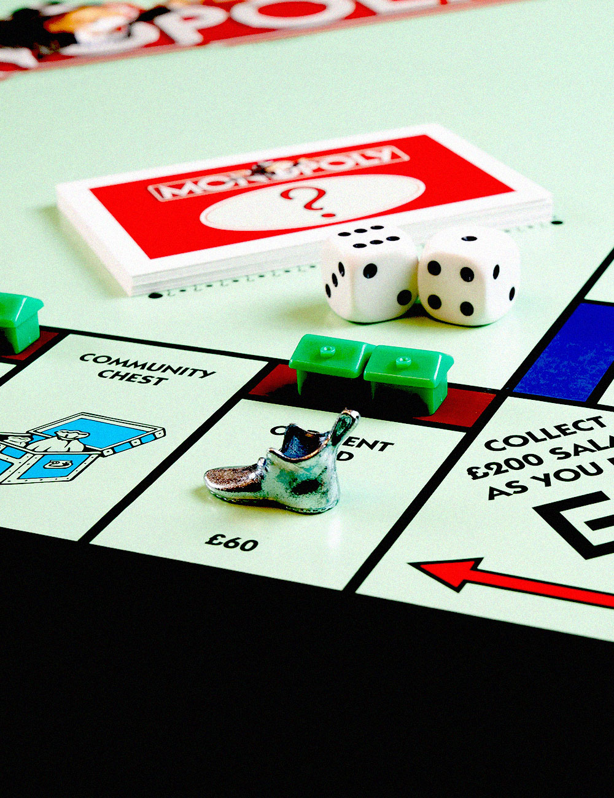

The other day Vega managed to convince me to go to her board game night with Finn, and her… friend? I guess? Rowan. (Rowan is totally her boyfriend, but she refuses to admit to me that she likes him.)
Anyways! We hung out at their apartment and played Monopoly. This was my first time formally meeting Rowan. He seems chill, but he doesn’t seem to like me all that much. And Finn really likes Monopoly. Like… a lot. He gets really into it, and he’s obsessed with the railroad system. Since I didn’t really care about winning, I graciously sold him my railroad that he was missing at the value I bought it at.
It made him happy and that was honestly enough for me. Getting to see him happy…
Maybe I will start hanging out with Finn now. I mean, now that’s he’s not obsessively trying to get me to hang out with him, he seems pretty chill. And seeing who he hangs out with, maybe he’s more capable of handling me than I thought. This relationship seems worth it.
I’m not writing a conclusion. This is for me anyways, I can make my journal entries end abruptly if I want to!
Cedar